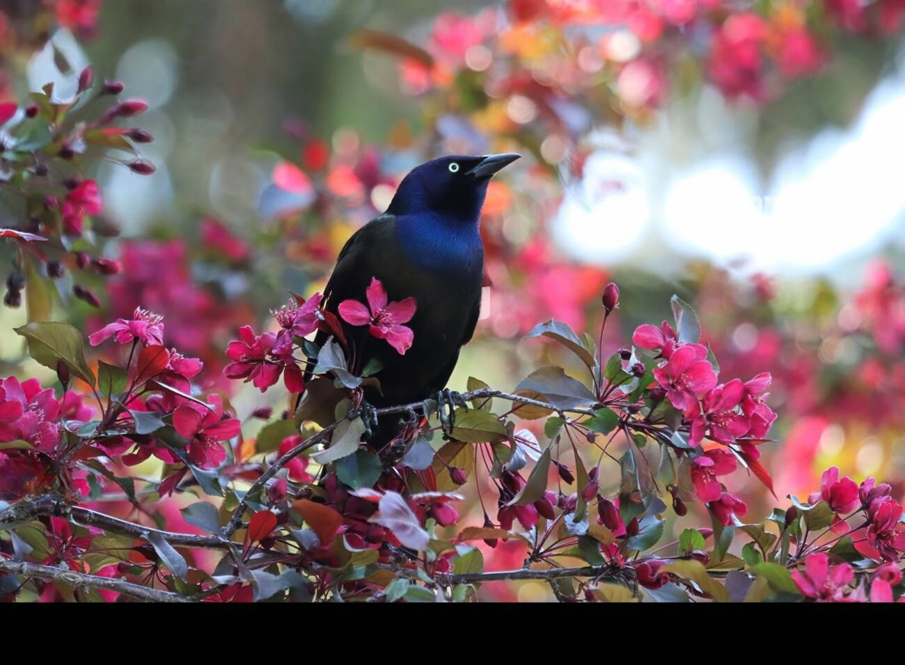

somehow, it's birdy
sometimes i feel patched up with feathers that fit light that’re weathered and hit and the hole don't sit tight when i breathe deeply, it flutters and i remember the air what it’s like to share sky with another person’s care my lungs will empty. and my chest will still sink heart still on beat as i make my eyes blink i pick at my scabs with the edge of my beak and summon a smile from the back of my cheek allegedly grackles of my type don’t fly “it’s just too high!” or, “they couldn’t if they tried!” all i would hear is how the good had gone by but i remember the air that joy that it shared and my heart’s still on beat, so why can’t it repeat? i don’t care about embers if the warmth is still there i think cats look too busy, but i know they still care i hear boo’s from the crowd and i think they’re quite rare and my heart can still flutter, long as my soul is somewhere.